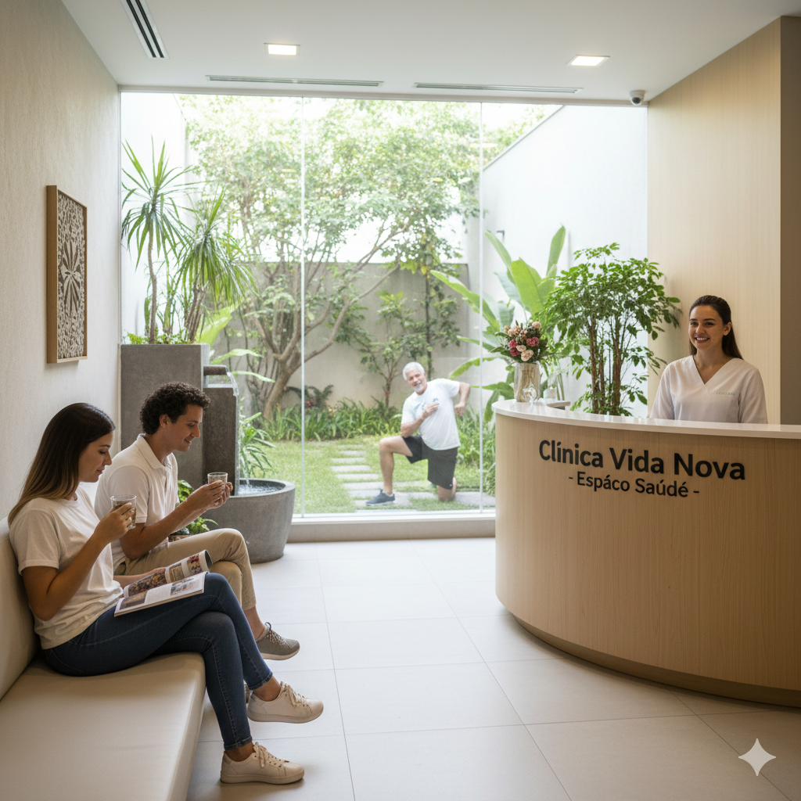
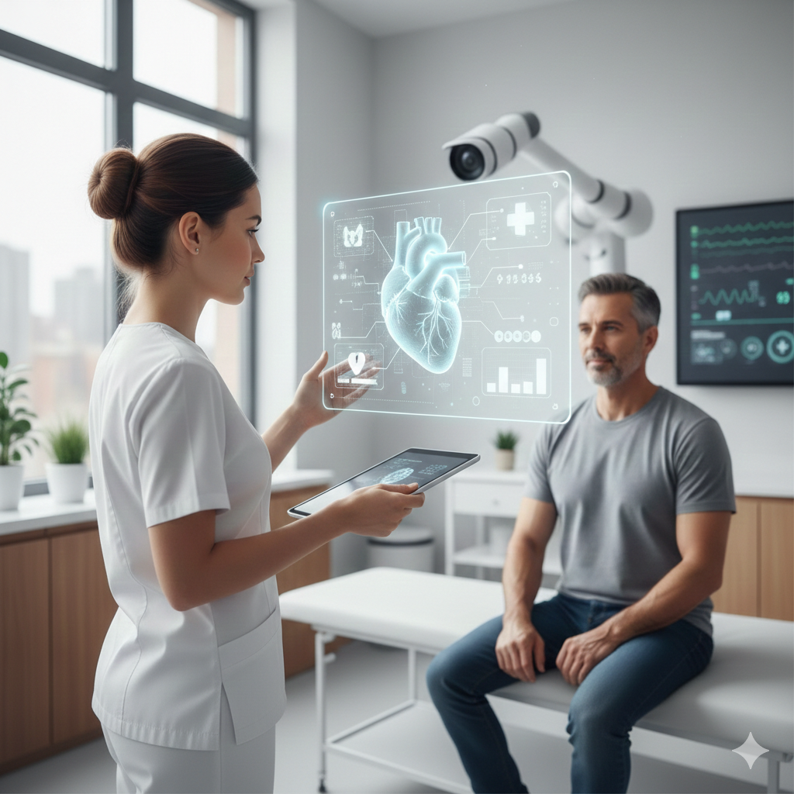

Pesquisas Avançadas
Na Clínica Vida Nova, unimos ciência e inovação para desenvolver protocolos de tratamento de ponta. Nosso foco
é a medicina preventiva e diagnósticos de alta precisão, garantindo segurança e resultados modernos
para sua saúde
Confira nossos estudos científicos
Espaço Saúde

O Espaço Saúde une nutrição, psicologia e educação física para um cuidado integral. Nossa equipe
multidisciplinar foca no equilíbrio entre corpo e mente, criando planos personalizados para sua longevidade.
Conheça nossos
especialistas
Tecnologia ++ Saúde

A Tecnologia na Saúde é nossa grande aliada para tratamentos mais eficientes. Utilizamos sistemas de
monitoramento digital e equipamentos de última geração para oferecer diagnósticos rápidos e precisos.
Inovação tecnológica na Clínica Vida Nova significa mais segurança e conforto para você.
Descubra nossas tecnologias